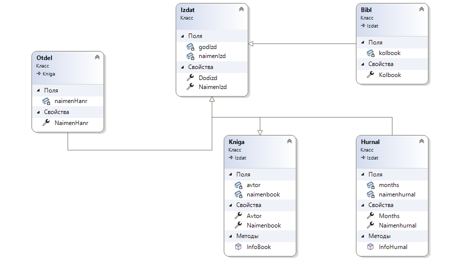

|
Смоделировать структуру библиотеки:
|
Классы |
Свойства |
|
Библиотека |
название (get, set) |
|
Отдел ( по жанрам ) |
название жанра(get,set)
количество изданий (get, set) |
|
Издание |
название(get, set)
автор (get, set)
год издания (get, set) |
Предположим, что все Издания делятся на два типа:
- - Книга – отличается наличием резюме (краткого описания)
- - Журнал – отличается наличием множества статей
Требуется формировать текстовое описание Издания в виде:
- для Книги:
- «Автор: <автор>,
- год издания: <год издания>
- название: <название>
- резюме: <резюме> (отличная,
хорошая, посредственная)
- для Журнала:
- Автор: <автор>,
- год издания: <год издания>
- название: <название> -журнала
- название статьи
для этого выполнить следующие действия:
- - сделать класс Издание
- - добавить в класс Издание метод «сформировать описание
издательства»
- - создать классы «Книга» и «Журнал», унаследовать их от класса Издание
- - добавить в класс Журнал свойство «названия статей» (get,
set)
- - перегрузить метод «сформировать описание» в классах «Книга» и «Журнал».

-
Создать
открытые (Public) конструкторы для классов
Библиотека, Отдел, Издание, Книга, Журнал.
-
Конструкторы должны принимать в
качестве параметров значения простых (не
множественных) свойств, описанных в
соответствующем классе.
-
Конструкторы дочерних классов (Книга и Журнал)
должны вызывать конструктор базового класса
(Издание).
В определенный отдел библиотеки (как
минимум два отдела: научная, программирование) добавить
две книги и один журнал.
В основной программе (main) при создании объектов задавать
значения свойств. Проверить работу программы.
Используя цикл, сформировать и вывести на экран
наличие книг и журналов для каждого издания данного отдела.
|